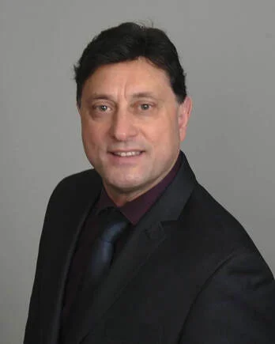

Senior Pastor
Larry DeSantis

Larry DeSantis is the founder of Aquila Christian Ministries and Healing of America Revival Center. He received Jesus Christ as his Lord and Savior on November 18, 1980, and has faithfully preached the Gospel since 1986.
Larry has a deep love for God’s people and a passion for reaching those who have yet to know Christ. His ministry emphasizes the full Gospel, intimacy with God, the love of the Father, and the call for spiritual revival.
Throughout his years in ministry, Larry has received prophetic words concerning revival, including from Evangelist Hector De La Cruz of Mexico. He believes the Church stands at the threshold of a significant spiritual awakening, marked by deep repentance, renewed devotion to God, and a powerful outpouring of the Father’s love.
His desire is to see people set free from spiritual bondage, believers restored to a deeper relationship with Christ, and the Church in America return wholeheartedly to God. He believes this is a time for spiritual renewal and for the healing of America through the transforming power of Jesus Christ.
In addition to preaching and ministry leadership, Larry teaches and consults on spiritual and natural health, seeking to help individuals understand the importance of caring for both spiritual and physical well-being.
Education, credentials and ministry experience
Ministerial training through Living Word Christian School of Ministry in Forest Park, Illinois.
Graduate of the Joseph School of Business and Entrepreneurship in Forest Park, Illinois.
Ordained through World Harvest Ministerial Fellowship in Columbus, Ohio.
Doctor of Naturopathy and Wholiopathic Doctor (wording and credentials to be verified).
Director of New Eden Schools and Aquila Christian Ministries.